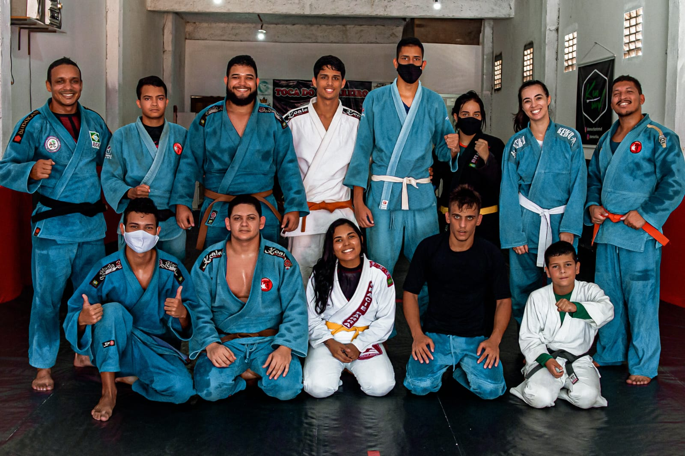

Bushidô, o Caminho do Guerreiro
O Sensei Luciano Paulo acreditava que o judô poderia ser uma ferramenta para ajudar as pessoas a se tornarem melhores cidadãos. Ele quis criar um ambiente onde os alunos pudessem aprender a disciplina, a perseverança e a autoconfiança, baseados na filosofia do Bushidô, que são: coragem, honra, lealdade, respeito e autocontrole, almejando então que seus alunos se tornassem pessoas melhores, não apenas atletas melhores. Com esse sonho em mente, o Sensei Luciano Paulo fundou a Bushido Judô Club em 2006. Desde então, a escola cresceu e se tornou uma referência no ensino do judô em Maceió, Alagoas. A escola tem como objetivo formar novos judocas e cidadãos melhores para a sociedade, baseados nos ensinamentos do Sensei Jigoro Kano.
A baixo, você pode assistir um vídeo para entender um pouco mais sobre a filosofia Bushidô
clique aqui para assistir ao vídeo